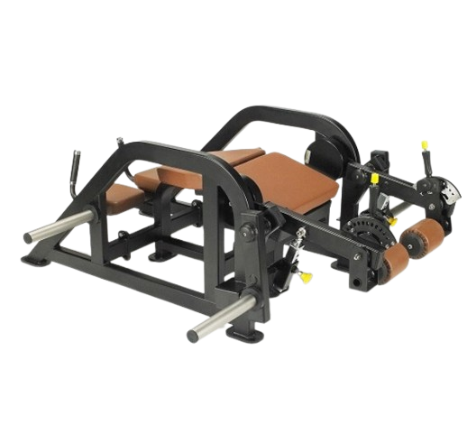
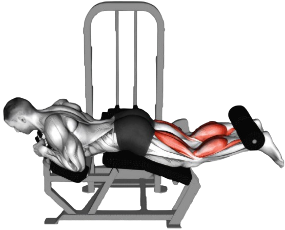
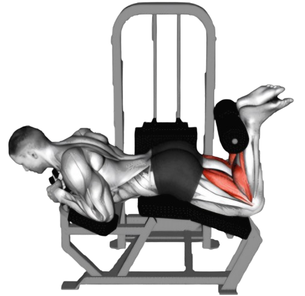

라잉레그컬

- 무릎뼈가 벤치 끝을 살짝 넘어오도록 엎드린 상태로 손잡이를 잡았을 때, 롤패드가 종아리 근육이 끝나는 지점에 오도록 세팅한다.
- 벤치에 엎드려 손잡이를 잡고, 발목 위쪽에 롤패드에 건다.
- 허벅지 힘으로 발목쪽 롤패드를 끌어당기며 무릎을 굽힌다. 이때 발끝을 엉덩이에 붙인다고 생각하며 당겨준다.
- 이때 호흡은 뱉는다.
- 천천히 다리 뒤쪽 근육의 자극을 느끼며 다리를 내린다.
- 수축 속도는 빠르게, 이완은 천천히 근육 텐션을 유지한 채로 해준다.
- 이때 호흡은 마신다.

주의사항
- 허리를 지나치게 구부리거나 들지 않도록 주의한다.
- 처음 시작할 때는 적은 중량으로 시작하여, 올바른 자세로 운동할 수 있을 정도의 중량을 선택한다.
- 무리하게 중량을 늘리거나 동작을 빠르게 수행하지 않도록 한다. 부상을 방지하기 위해 항상 준비 운동과 스트레칭을 한다.
운동부위 및 효과
- 햄스트링, 엉덩이 근육
- 햄스트링은 스프린트나 점프 동작에서 중요한 역할을 하므로, 이 운동을 통해 운동 능력을 향상시킬 수 있다.